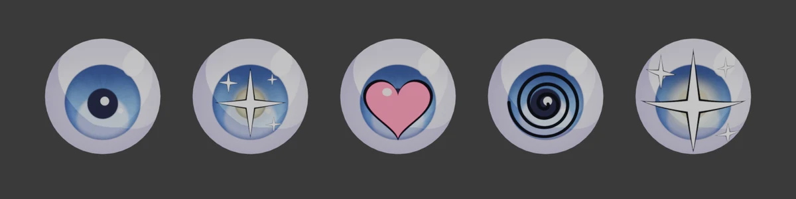
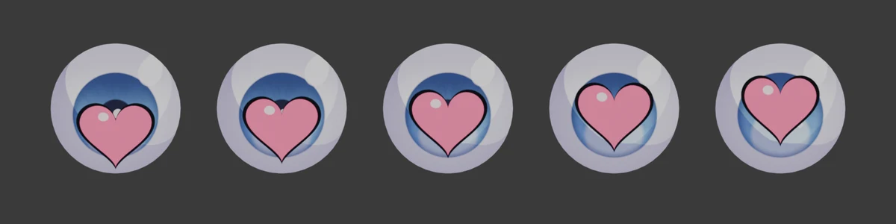
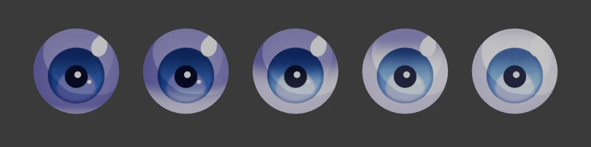
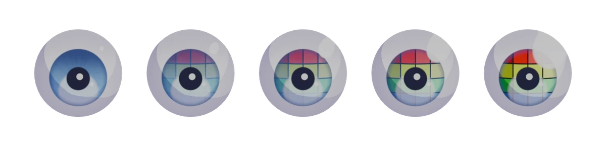
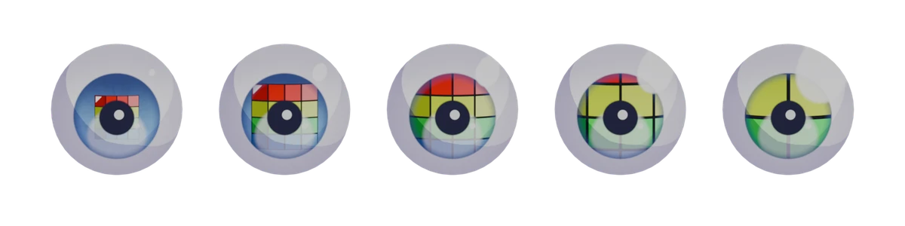
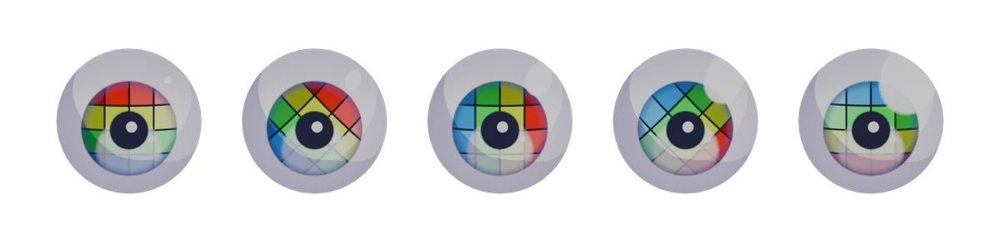

Manga Toon Eye NEW

MTE · Material › Manga Toon Eye [マテリアル名] › MTS Parallax Eye
眼球の球面の内側に虹彩があるように見せる視差（パララックス）の目です。マテリアルには外側のグループ1つだけが見え、中で「位置 → 見た目 → エフェクト → 合成」の順に処理します。見た目の項目はプロパティエディターのマテリアルタブ「Manga Toon Eye」に並びます。
概要図 Layer stack
眼球の球面に、下の層から順に描いていきます。
構成 Node tree
スタイルは「アニメ」「漫画（白黒・インク線）」の2種類。グループにはバージョンがあり、古いものは値を保ったまま自動で作り直されます。
パネルと数値 Inputs
5つの球（目・口・空）は、左から右へ値を変えたものです。画像の下に値を書いています。黄色い欄がその項目の既定値で、ほかの項目は既定値のままです。
MTS Parallax Eye の項目一覧
| パネル | 項目 | 英語名 | 既定値 |
|---|---|---|---|
| 眼球 | 目の大きさ | Eye Scale |
1 |
| 眼球 | 明るさ | Brightness |
1 |
| エフェクト | エフェクトの画像 | — | なし |
| エフェクト | 貼り方 | Follow Iris |
黒目に追従 |
| エフェクト | 目の表示 | Eye Display |
目＋エフェクト |
| エフェクト | 大きさ | Effect Size |
1 |
| エフェクト | 明るさ | Effect Brightness |
1 |
| エフェクト | 位置 X / Y | Effect Position |
0 / 0 |
| 黒目の色 | 黒目サイズ | Iris Size |
0.52 |
| 瞳孔 | 瞳孔サイズ | Pupil Size |
0.42 |
| 瞳孔 | 瞳孔の形 | Pupil Shape |
0 |
| ハイライト | ハイライトサイズ | Highlight Size |
0.2 |
| ハイライト | ハイライト X | Highlight X |
0.28 |
| まぶたの影 | まぶたの影の高さ | Lid Shadow Height |
0.5 |
| 黒目のテクスチャ | テクスチャの濃さ | Texture Mix |
1 |
| 黒目のテクスチャ | 乗算（模様だけ使う） | Texture Multiply |
0 |
| 黒目のテクスチャ | テクスチャの大きさ | Texture Scale |
1 |
| 黒目のテクスチャ | テクスチャの回転 | Texture Rotation |
0° |
| 黒目の縁・模様 | 黒目の外周リング | Limbal Ring |
0.7 |
| 黒目の縁・模様 | 模様の濃さ | Pattern Amount |
0.35 |
| 黒目の縁・模様 | 模様の細かさ | Pattern Scale |
1 |
| 黒目の輪郭線 | 輪郭線の太さ | Ink Width |
0.08 |
| 下の反射 | 反射の強さ | Glow Amount |
0.5 |
| 下の反射 | 反射の位置（下へ） | Glow Offset |
0.45 |
| ライトの陰影 | 影のしきい値 | Shadow Threshold |
1 |
| 白目 | 陰りの濃さ | Sclera Shade |
0.35 |
眼球 Eyeball
エフェクト Eye Effect
目の一番上の層に、透明部分のある画像（PNG）を重ねます。ハートやキラキラ、ぐるぐるなど、漫画の「目の表情」をそのまま描き込めます。プロパティエディター › マテリアル › 目の「エフェクト」で画像を選ぶと、下の項目が出ます。


比較に使った PNG（512 × 512・背景は透明）。どれも自由に使えるオリジナル画像です。
ImagePNG（透明部分あり）重ねる画像。透明な部分は下の目がそのまま見えます。右端は貼り方を「目全体」にした場合で、黒目の外まで広がります。


Follow Iris既定 黒目に追従黒目に追従：画像の中心が黒目の中心に付き、視線と一緒に動きます。大きさも黒目に合わせて決まります。
目全体：目の板全体に貼り、視線を動かしても画像は動きません。
左目は反転：オンにすると左目の画像を左右反転し、左右対称にします。
Eye Display既定 目＋エフェクトサイドバーの「目の表示」で、目に何を描くかを切り替えます。「白目＋エフェクト」は黒目とハイライトを消し、白目の上にエフェクトだけを描きます。「隠す」は目を描きません。自動キー挿入がオンなら、補間なしのキーフレームが入ります。


Effect Position Y既定 0比較 -0.3 → 0.3エフェクトを上下にずらします。位置はパネルの操作パッド（点をドラッグ）でも動かせ、ボーンで動かすこともできます（エフェクトのボーン）。


黒目の色 Iris Color
Iris Size既定 0.52比較 0.3 → 0.8虹彩の大きさ。

瞳孔 Pupil
Pupil Size既定 0.42比較 0.1 → 0.8瞳孔の大きさ。


ハイライト Highlights
Highlight Size既定 0.2比較 0.05 → 0.45いちばん大きいハイライト（ハイライト 1）の大きさ。

Highlight X既定 0.28比較 -0.6 → 0.6ハイライト 1 の左右の位置。

まぶたの影 Lid Shadow
Lid Shadow Height既定 0.5比較 -1 → 1上まぶたの影が下りてくる位置。マイナスほど影が下まで下り、白目と黒目が暗くなります。プラスでは影が上に引いて、1 でほぼ消えます（濃さ 1、影の色が濃い紫の場合）。


黒目のテクスチャ Iris Texture
黒目に画像を貼ります。画像を選ぶと黒目いっぱいに貼られ、画像の中心が黒目の中心になります。瞳孔・ハイライト・反射はテクスチャの上に描かれます。古い目で欄が出ないときは、もう一度セットアップすると使えるようになります。
 比較に使った画像
比較に使った画像Texture Mix既定 1比較 0 → 1テクスチャを黒目の色にどれだけ重ねるか。0 で元の黒目の色、1 でテクスチャの色になります。


Texture Multiply既定 0比較 0 → 1上げるほど、テクスチャを黒目の色に掛け合わせます。黒目の色を残したまま、模様の明暗だけを使いたいときに。

Texture Scale既定 1比較 0.5 → 2テクスチャの大きさ。1 で黒目いっぱい。1 より小さいと画像の外側の部分は元の黒目の色になり、大きいと中央部分を拡大します。


Texture Rotation既定 0°比較 0° → 180°テクスチャを黒目の中心で回します（色の違うタイルを並べた画像の場合。上の赤い列の位置で向きがわかります）。「テクスチャを左目で反転」をオンにすると、左目は左右反転して貼られます。


黒目の縁・模様 Iris Rim / Pattern

Pattern Amount既定 0.35比較 0 → 1虹彩の放射状の模様の濃さ。

Pattern Scale既定 1比較 0.3 → 8模様の細かさ（模様の濃さ 0.8 の場合）。

黒目の輪郭線 Iris Outline
Ink Width既定 0.08比較 0 → 0.3虹彩を囲むインクの線（オンの場合）。

下の反射 Lower Glow

Glow Offset既定 0.45比較 -1 → 1反射の位置。マイナスで上に移ります。

ライトの陰影 Light Shading
Shadow Threshold既定 1比較 0 → 4RGB ライトで目に入る影の量。上げると影が広がり、目が暗くなります。

白目 Sclera
Sclera Shade既定 0.35比較 0 → 1白目のふちの陰り。